Un pilier du heavy metal
Formé en 1969 en Angleterre, Judas Priest compte parmi les groupes fondateurs du heavy metal. Leur approche musicale et visuelle a profondément marqué le genre, en définissant des codes qui influencent encore la scène actuelle.
Un son caractéristique
La musique de Judas Priest se distingue par plusieurs éléments clés :
- Des riffs de guitare puissants et précis, souvent joués en harmonie par deux guitaristes, créant un son à la fois mélodique et agressif.
- Une voix exceptionnelle : Rob Halford, chanteur emblématique du groupe, combine une tessiture de ténor capable d'atteindre des aigus perçants avec une présence scénique imposante.
- Des mélodies accrocheuses intégrées à des structures musicales dynamiques, évitant l'excès de complexité au profit d'une efficacité immédiate.
- Un rythme énergique, porté par une section rythmique solide qui donne une dimension dansante à leur musique.
Leur style, ni trop lent ni trop extrême, représente une forme de heavy metal accessible sans être simpliste, idéale pour aborder le genre.
Une esthétique révolutionnaire
Avant Judas Priest, l'imagerie du rock était souvent associée à des tenues colorées ou psychédéliques. Le groupe a introduit une nouvelle identité visuelle :
- L'utilisation systématique du cuir noir, souvent agrémenté de clous et de rivets.
- Une attitude inspirée de l'univers des motards, avec des accessoires comme les vestes cloutées ou les Harley-Davidson intégrées aux performances scéniques.
- Une posture à la fois virile et théâtrale, évitant les excès occultes ou provocateurs pour privilégier une forme de rébellion élégante.
Cette esthétique, adoptée dès les années 1970, est devenue une référence pour des générations de groupes, du glam metal au power metal.
Une influence majeure
L'impact de Judas Priest sur la musique metal est difficile à surestimer. Leur travail a :
- Démontré qu'un groupe de metal pouvait allier mélodie et puissance sans sacrifier son intégrité artistique.
- Ouvert la voie à de nombreux sous-genres, notamment le speed metal (avec des morceaux comme "Exciter"
) et le power metal (par leur emphase sur les harmonies vocales et guitaristiques).
- Inspiré des groupes majeurs des années 1980 et 1990, de Metallica à Iron Maiden en passant par Helloween.
Sans leur contribution, le paysage du metal moderne serait radicalement différent.
Pourquoi écouter Judas Priest ?
Plusieurs raisons expliquent leur statut de groupe incontournable :
- Une discographie riche en classiques : leurs chansons, comme "Breaking the Law" ou "Painkiller"
, restent des références du genre.
- Une accessibilité relative : leur musique, bien que puissante, évite les excès techniques ou les structures
trop expérimentales, ce qui la rend adaptée à un large public.
- Une importance historique : comprendre Judas Priest, c'est comprendre une partie essentielle de l'évolution
du heavy metal.
Suggestions d'écoute
Pour découvrir leur univers, trois morceaux emblématiques :
- "Breaking the Law" (1980) – Un hymne simple et efficace, idéal pour une première approche.
- "Painkiller" (1990) – Un titre plus technique et rapide, illustrant leur évolution vers un son plus
agressif.
- "You've Got Another Thing Comin'" (1982) – Un exemple parfait de leur talent pour les refrains
mémorables.
En conclusion
Judas Priest incarne l'équilibre parfait entre tradition et innovation
dans le heavy metal. Leur héritage musical et visuel continue de résonner, faisant d'eux un groupe
essentiel pour quiconque s'intéresse à l'histoire du rock et de ses dérivés.
Leur discographie offre un point d'entrée à la fois représentatif et captivant
pour explorer le genre.